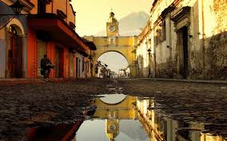
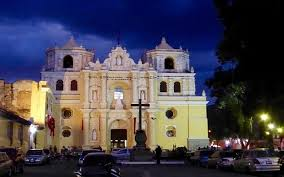
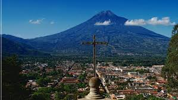
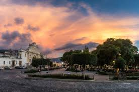
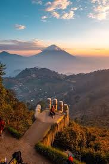

Un tesoro histórico
Antigua Guatemala es famosa por su arquitectura barroca española conservada y sus espectaculares ruinas de iglesias coloniales.
Lugares imperdibles

Arco de Santa Catalina
El simbolo más iconico de la ciudad construido en el siglo xvII para conectar un convento.

Iglesia de la Merced
Famosa por su fachada ultra barroca amarilla y blanca, es una obra maestra de la arquitectura colonial

Cerro de la cruz
Un mirador impresionante que ofrece la mejor vista panoramica de la ciudad y el volcán de agua.

Parque Central
El corazón latente de Antigua rodeado por la catedral el palacio de los capitanes y la fuente de las sirenas.

Hobbitenango
Un parque ecologico inspirado en "El señor de los Anillos" con vistas increibles a los volcanes.